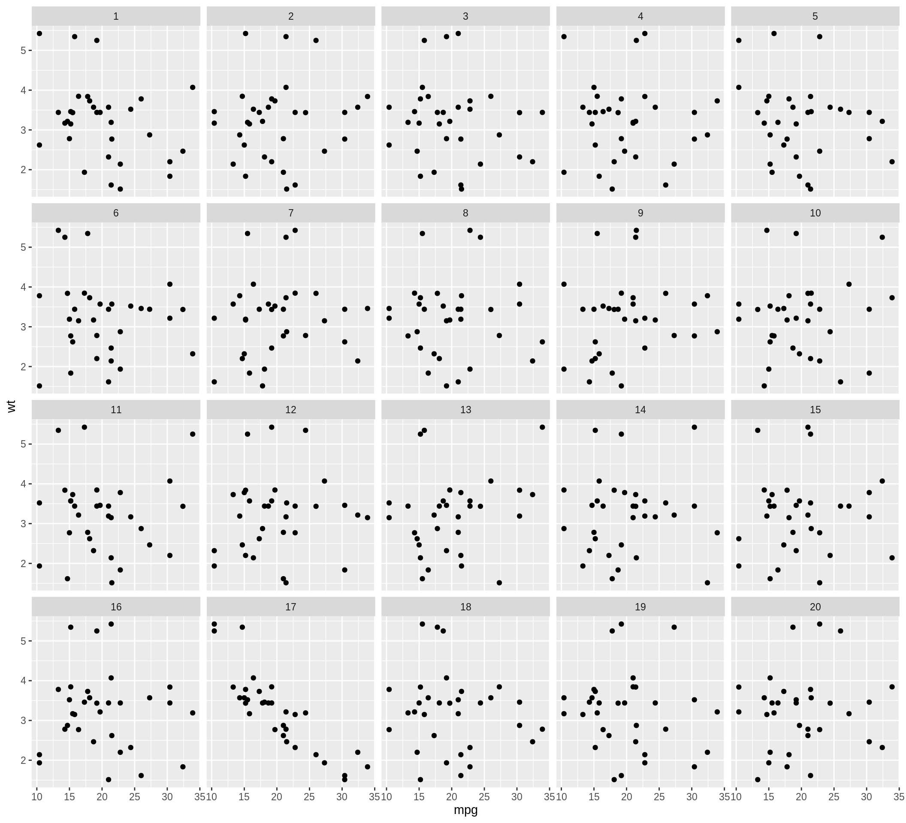
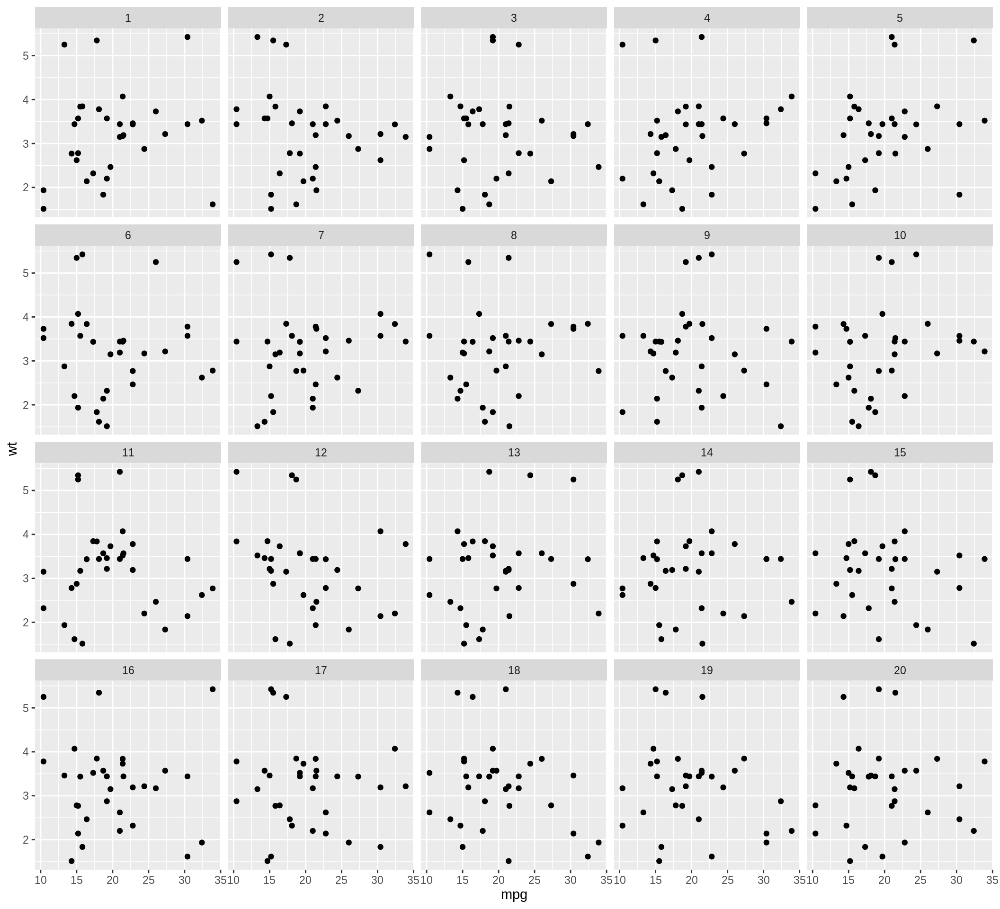
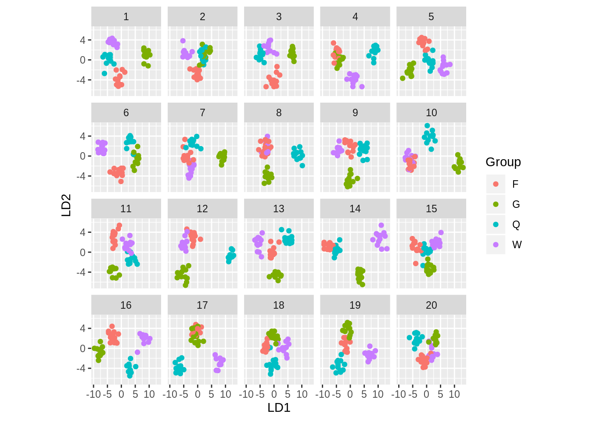
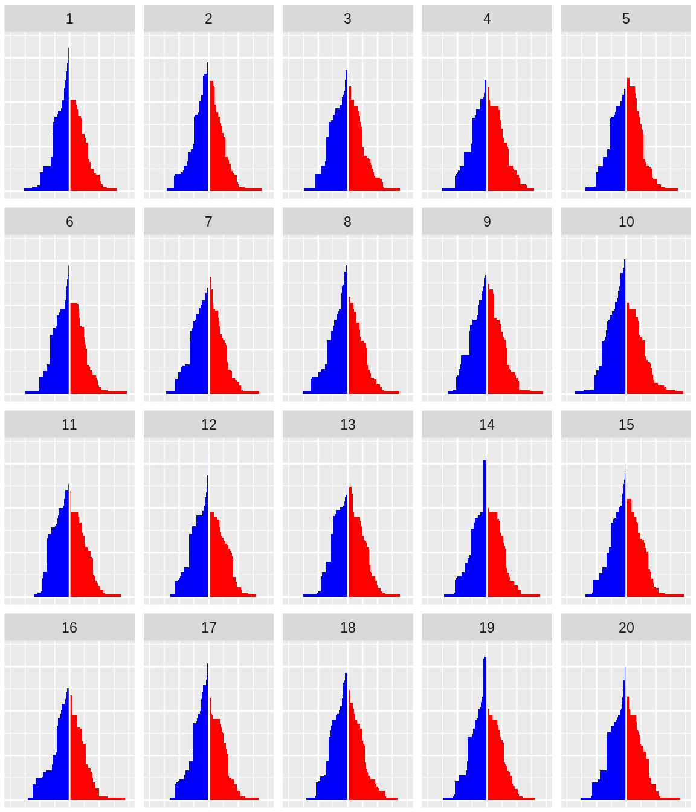
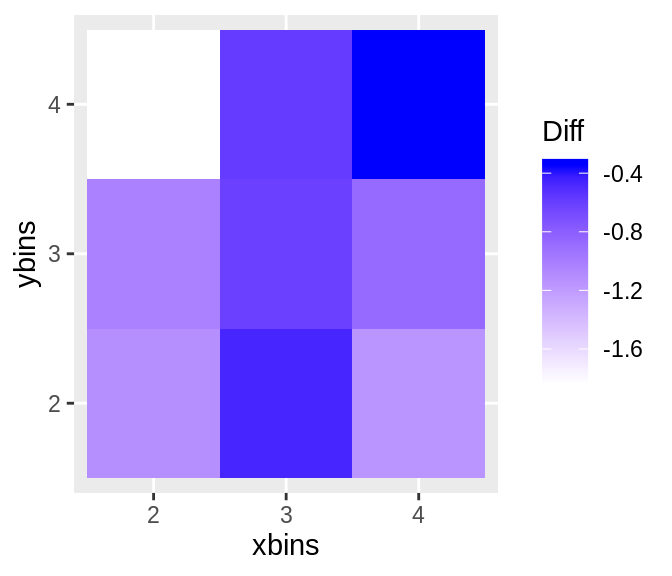
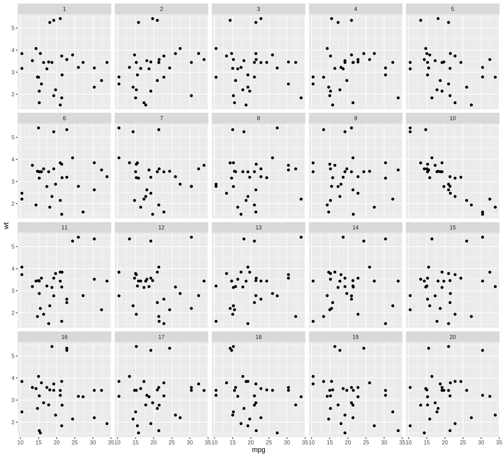
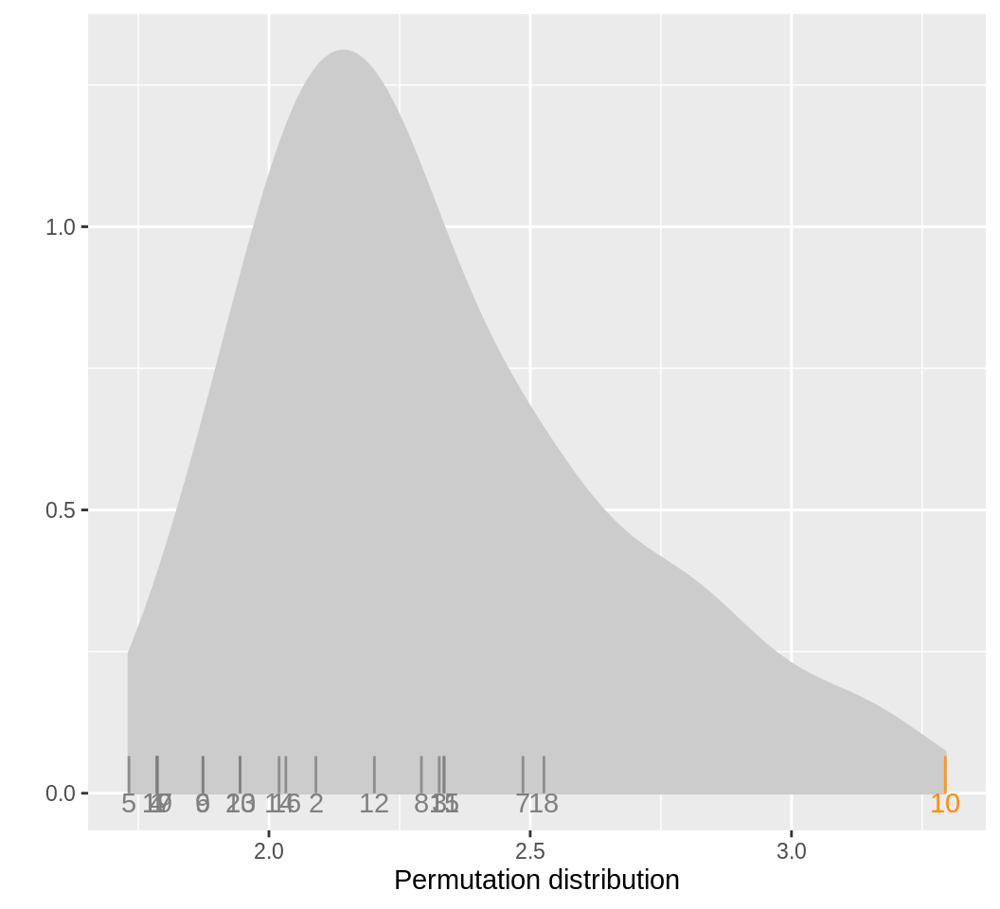

Chapter 70 nullabor
Jinwoo Jung and Tae Yoon Lim
This is a Korean translated version of nullabor packages (i.e. nullabor.html, nullabor-examples.html, and distance.html)
70.1 nullaobr 패키지 입문
nullabor 패키지는 그래프에 보이는 통계적 유의성을 계량화하는 함수를 제공한다.
패키지내 함수들은 두가지 경우에 대한 방법을 제공한다: lineup 와 rorschach. lineup의 경우 실제 데이터의 그래프를 여러 무수의 데이터 그래프 사이에 끼워넣고, Rorschach 경우, 모든 그래프들이 무수의 데이터 그래프이다. encrypt 는 실제 데이터의 위치를 비밀로 만들수 있고, decrypt 를 사용해 위치를 찾을 수 있다. R내에는 여러 함수들을 이용해 이 무수의 데이터를 만들 수 있고 예시는 다음과 같다: null_permute, null_lm, null_dist.
70.1.1 lineup 방법
이 방법에서는, 실제 데이터 그래프가 무수의 데이터 그래프들 사이에 끼어있다. 매트릭스 형태의 여러 그래프들이 이 "lineup" 으로 알려져 있다. 무수의 데이터 그래프들은 귀무가설에 동의하는 방법으로 생성된다. 이렇게 생성된 "lineup"을 관찰자에게 보여주고, 만약 관찰자가 실제 데이터를 무수의 데이터들 사이에서 고를 수 있다면, 실제 데이터의 통계적 유의성에 무게가 실린다. "lineup" 함수는 무수의 데이터집합과 실제 데이터를 임의적인 순서로 같은 집합의 값을 돌려준다. "lineup" 함수에 실제 데이터만을 입력값으로 넣으면 함수 자체내에서 무수의 데이터들이 생성된다. 사용자들은 또한 자신들의 방법으로 무수의 데이터를 생성후 lineup의 입력값에 넣을 수 있다. 실제 데이터의 위치는 기입 안해도 되고 함수자체가 임의적으로 실제 데이터의 위치를 지정한다. 그 후 함수는 실제 데이터의 위치를 암호화 된 코드로 반환한다. 암호화된 코드는 콘솔에 복사, 붙여넣기를 통하여 실제 위치를 알 수 있다. 밑에 제시된 예시를 참조하길 바란다.
## mpg cyl disp hp drat wt qsec vs am gear carb .sample
## 1 10.4 6 160 110 3.90 2.620 16.46 0 1 4 4 1
## 2 27.3 6 160 110 3.90 2.875 17.02 0 1 4 4 1
## 3 21.0 4 108 93 3.85 2.320 18.61 1 1 4 1 1
## 4 14.7 6 258 110 3.08 3.215 19.44 1 0 3 1 1
## 5 13.3 8 360 175 3.15 3.440 17.02 0 0 3 2 1
## 6 15.2 6 225 105 2.76 3.460 20.22 1 0 3 1 1## [1] 17"lineup" 데이터는 ggplot2 패키지를 통하여 시각화 할 수 있다. 이렇게 시각화된 데이터를 가지고 많은 사람들에게 실제 데이터를 생선된 무수의 데이터들 사이에서 고를 수 있는지 없는지를 통하여 귀무 가설을 실험할 수 있다. 만약 대중들 중에 실제 데이터 그래프를 정확하게 집어 낼 수 있다면, 귀무 가설을 수용 하지 않고 실제 데이터가 좀 더 강한 분포를 갖고 있다고 결론 낼수 있다. 밑에 제공된 예시는 시각화 하는 방법이다.

70.1.2 Rorschach 방법
Rorschach 방법은 표집으로 인한 다양성을 사람의 눈으로 확인 할 수 있는지를 확인할 때 사용한다. 그래프들은 무수의 데이터들로 만들어 졌고, 이 무수의 데이터들은 귀무 가설에 수용한다. "rorschach" 함수는 무수의 데이터로 만들어진 그래프의 집합을 반환한다. "lineup" 함수와 같이 무수를 만드는 방법은 입력값에 실제 데이터와 함께 제공되어야 한다. 실제 데이터를 포함할지 안할지에 대한 확률 또한 입력값으로 넣을 수 있다. 아래 예시를 참조하길 바란다.
d <- rorschach(null_permute("mpg"), mtcars, n = 20, p = 0)
ggplot(data=d, aes(x=mpg, y=wt)) + geom_point() + facet_wrap(~ .sample)
70.1.3 특정 분포를 가진 무수의 데이터 생성하기
"null_dist" 함수는 데이터 변수의 이름과 특정 분포를 입력 값으로 받는다. 그러면 이 변수는 임의로 특정 분포를 가진 데이터로 생성된다. 특정 분포 입력값에 들어 갈 수 있는 분포는 다음과 같다: beta(베타), cauchy(카우치), chi-squared(카이제곱), exponential(지수분포), f(F분포), gamma(감마 분포), geometric(기하 분포), log-normal(로그 정규 분포), lognormall(로그 정규 분포), logistic(로그 분포), negative binomial(음수 이항 분포), normal(정규 분포), poisson(푸아송 분포), t(t 분포) and weibull(베이풀 분포). 입력값에 이러한 분포 값을 포함 시킬 수 있다. 만약 분포에 대한 값이 입력값에 포함되지 않을 경우 "fitdistr" 가 사용되어 제공된 데이터를 가늠한다. "null_dist"함수는 무수의 데이터 집합을 생성하는 함수를 반환한다. 아래의 예시를 참조하길 바란다.
## mpg cyl disp hp drat wt qsec vs am gear carb
## Mazda RX4 17.711471 6 160 110 3.90 2.620 16.46 0 1 4 4
## Mazda RX4 Wag 19.329862 6 160 110 3.90 2.875 17.02 0 1 4 4
## Datsun 710 22.891983 4 108 93 3.85 2.320 18.61 1 1 4 1
## Hornet 4 Drive 24.701859 6 258 110 3.08 3.215 19.44 1 0 3 1
## Hornet Sportabout 6.846055 8 360 175 3.15 3.440 17.02 0 0 3 2
## Valiant 18.694908 6 225 105 2.76 3.460 20.22 1 0 3 170.1.4 순열을 통한 무수의 데이터 생성하기
"null_permute" 함수는 변수의 이름을 입력값으로 받는다. 이 변수를 순열하여 무수의 데이터 집합을 얻는다. "null_permute" 함수는 무수의 데이터 집합을 생성하는 함수를 반환한다. 아래의 예시를 참조하길 바란다.
## mpg cyl disp hp drat wt qsec vs am gear carb
## Mazda RX4 18.1 6 160 110 3.90 2.620 16.46 0 1 4 4
## Mazda RX4 Wag 15.5 6 160 110 3.90 2.875 17.02 0 1 4 4
## Datsun 710 21.5 4 108 93 3.85 2.320 18.61 1 1 4 1
## Hornet 4 Drive 16.4 6 258 110 3.08 3.215 19.44 1 0 3 1
## Hornet Sportabout 22.8 8 360 175 3.15 3.440 17.02 0 0 3 2
## Valiant 30.4 6 225 105 2.76 3.460 20.22 1 0 3 170.1.5 모델에서의 무수 잔차를 이용해 무수의 데이터 생성하기
"null_lm"함수는 모델에 대한 선형 회귀식 정보"lm"와 무수 잔차 생성에 관한 방법을 입력값으로 받는다. 세가지의 빌트-인 방식은 다음과 같다: "resid_rotate", "resid_pboot","resid_boot" 함수는 무수의 데이터 집합을 생성하는 함수를 반환한다. 아래의 예시를 참조하길 바란다.
## mpg cyl disp hp drat wt qsec vs am gear carb
## Mazda RX4 21.0 6 160 110 3.90 3.551389 16.46 0 1 4 4
## Mazda RX4 Wag 21.0 6 160 110 3.90 3.162937 17.02 0 1 4 4
## Datsun 710 22.8 4 108 93 3.85 3.283246 18.61 1 1 4 1
## Hornet 4 Drive 21.4 6 258 110 3.08 3.043491 19.44 1 0 3 1
## Hornet Sportabout 18.7 8 360 175 3.15 4.449837 17.02 0 0 3 2
## Valiant 18.1 6 225 105 2.76 3.821975 20.22 1 0 3 1
## .resid .fitted
## Mazda RX4 0.46223502 3.089154
## Mazda RX4 Wag 0.07378361 3.089154
## Datsun 710 0.44764432 2.835602
## Hornet 4 Drive 0.01068180 3.032809
## Hornet Sportabout 1.03670071 3.413136
## Valiant 0.32432142 3.49765370.1.6 nullabor 밖의 데이터 생성하기
만약 무수 생성 매커니즘이 특별하다면 이 패키지 외에서 이러한 방법을 만드는 것은 가치가 있다. lineup 함수는 임의로 데이터 그래프의 포지션을 지정후 암호화 하는데 사용 할 수 있다. 좋은 예시로는 다음이 있고, Roy Chowdhury, N. et al (2015), 이 논문의 경우 데이터는 고차원으로 이루어 져 있고 종속변수는 정량형 변수 이다. 우리는 선형 차원 감소와 같은 차원 감소 방법을 통해 저차원의 방식으로 그룹을 나눈다. 무수 생성의 방법으로는 그룹들의 레이블을 순열하고 차원 감소를 다시 한번 실행한다. 아래의 예시를 참조하길 바란다.
library(MASS)
data(wasps)
wasp.lda <- lda(Group~., data=wasps[,-1])
wasp.ld <- predict(wasp.lda, dimen=2)$x
true <- data.frame(wasp.ld, Group=wasps$Group)
wasp.sim <- data.frame(LD1=NULL, LD2=NULL, Group=NULL, .n=NULL)
for (i in 1:19) {
x <- wasps
x$Group <- sample(x$Group)
x.lda <- lda(Group~., data=x[,-1])
x.ld <- predict(x.lda, dimen=2)$x
sim <- data.frame(x.ld, Group=x$Group, .n=i)
wasp.sim <- rbind(wasp.sim, sim)
}
pos <- sample(1:20, 1)
d <- lineup(true=true, samples=wasp.sim, pos=pos)
ggplot(d, aes(x=LD1, y=LD2, colour=Group)) +
facet_wrap(~.sample, ncol=5) +
geom_point() + theme(aspect.ratio=1)
## [1] 1170.1.7 유의확률 계산하기
pvisual 함수는 라인업의 결과를 독립적인 관찰자들에게 제시한 시각화된 유의확률을 계산할 수 있다. 입력값으로는 (1) 라인업에 포함된 그래프 수, m(디폴트= 20) (2) 그래프를 읽는 관찰자 수, K (3) 실제 데이터를 뽑은 관찰자 수가 있다. 아래의 예시로는 10명의 관찰자가 있었고 그 중 4명이 맞았다고 가정해보자. 그렇다면 시각화 유의확률 이항을 통해 계산하고 모의로 종속 여부에 관하여 계산한다.
## x simulated binom
## [1,] 4 0.002 0.00102849870.1.8 검정력 계산하기
visual_power 함수는 각 라인업의 검정력을 계산하는데 사용된다. 아래 예시를 참조하길 바란다.
## # A tibble: 6 x 3
## pic_id power n
## <int> <dbl> <int>
## 1 36 0 18
## 2 105 0.746 17
## 3 116 0.125 16
## 4 131 0.842 14
## 5 159 0.656 15
## 6 225 0.130 1570.2 nullbor의 lineup 예시
70.2.1 선거 개찰
이 예시의 주제는 각 주의 표차를 여론 조사와 정규 분포를 통한 표집으로 실제 선거날의 잠재적 표차를 벡터화 시켜 알아보는 것이다. 이 예시에서 사용된 데이터는 2012년 미국 대선이다. .
simPoll <- function(trueData) {
simMargin <- rnorm(nrow(trueData), mean=trueData$Margin, sd=2.5)
simDemocrat <- ((simMargin>0) & trueData$Democrat) | ((simMargin<0) & !trueData$Democrat)
simMargin <- abs(simMargin)
res <- trueData
res$Democrat <- simDemocrat
res$Margin <- simMargin
res
}simPoll 함수는 각주로 부터의 개표결과를 받은 후 임의 값을 평균 값을 개표결과로 둔 정규 분포를 통해 만드는 데에 상대적으로 특화 되어 있다. 지금부터 각 주의 표준편차 (또는 정확성) 을 2.5라고 가정하겠다.
sim1 첫번째 모의의 예시이다 - 이 모의에 의하면 우리는 민주당의 대선 표를 모의 개표날의 결과로 구할 수 있다. 아래의 코드를 참조 하길 바란다.
data(electoral, package="nullabor")
margins <- electoral$polls
sim1 <- simPoll(margins)
sum(sim1$Electoral.Votes[sim1$Democrat])## [1] 337simPoll 함수가 실제 데이터와 똑같은 형식으로 데이터 집합을 반환하기에, 우리는 이 함수를 이용하여 lineup 방법으로 개표 모의에 관한 집합을 얻을 수 있다.
우리는 실제 데이터의 위치를 계속 알고 싶기에 라인업 방법에 입력값을 지정해야한다. (하지만 아래 예시에서는 일단 위치를 숨기기에 입력값에 포함시키지 않는다).
pos <- sample(20,1)
lpdata <- nullabor::lineup(method = simPoll, true=margins, n=20, pos=pos)
dim(lpdata)## [1] 1020 5## State Electoral.Votes Margin Democrat
## Alabama : 20 Min. : 3.00 Min. : 0.00119 Mode :logical
## Alaska : 20 1st Qu.: 4.00 1st Qu.: 6.89044 FALSE:523
## Arizona : 20 Median : 8.00 Median :13.61451 TRUE :497
## Arkansas : 20 Mean :10.55 Mean :15.98530
## California: 20 3rd Qu.:12.00 3rd Qu.:22.00660
## Colorado : 20 Max. :55.00 Max. :90.18677
## (Other) :900
## .sample
## Min. : 1.00
## 1st Qu.: 5.75
## Median :10.50
## Mean :10.50
## 3rd Qu.:15.25
## Max. :20.00
## 우리는 개표 결과를 실제 대선 개표 결과와 바꾸어 주어야 한다.
election <- electoral$election
idx <- which(lpdata$.sample==pos)
lpdata$Margin[idx] <- election$Margin그리고 이제 실제 데이터를 이용한 그래프를 그리겠다. 이 경과에서 우리는 데이터를 재구조해야한다:
library(dplyr)
lpdata <- lpdata %>% arrange(desc(Margin))
lpdata <- lpdata %>% group_by(.sample, Democrat) %>% mutate(
tower=cumsum(Electoral.Votes[order(Margin, decreasing=TRUE)])
)
lpdata$diff <- with(lpdata, Margin*c(1,-1)[as.numeric(Democrat)+1])이제 우리는 그래프의 매트릭스를 얻을 수 있다:
library(ggplot2)
dframe <- lpdata
dframe$diff <- with(dframe, diff+sign(diff)*0.075)
dframe$diff <- pmin(50, dframe$diff)
ggplot(aes(x=diff, y=tower, colour = factor(Democrat)), data=dframe) +
scale_colour_manual(values=c("red", "blue"), guide="none") +
scale_fill_manual(values=c("red", "blue"), guide="none") +
scale_x_continuous(breaks=c(-25,0,25), labels=c("25", "0", "25"),
limits=c(-50,50)) +
geom_rect(aes(xmin=pmin(0, diff), xmax=pmax(0,diff), ymin=0,
ymax=tower, fill=Democrat), size=0) +
geom_vline(xintercept=0, colour="white") +
facet_wrap(~.sample) +
theme(axis.text=element_blank(), axis.ticks=element_blank(),
axis.title=element_blank(),
plot.margin=unit(c(0.1,0.1,0,0), "cm")) 스스로 눈으로 보고 실제 데이터 값을 구할수 있는지 알아보길 바란다. 이 라인업 중 어떤것이 다른거 같나? 스스로 답을 내보고 밑에 값과 비교해보자.
## [1] 1070.3 무수(null) 와 데이터 포인츠들간의 거리계산
70.3.1 소개
데이터 포인트들을 계수적으로 설명하는것은 무척이 어렵습니다. 이러한 함수들은 나열해져잇는 상황속에서 특수한 상황을 측정할때 필요한데, 실제 데이터 포인트들이 무수(null)로 부터 어떻게 다른지 찾는데에 쓰입니다.
운율학(Metrics)은 나열되있는 그래프들관의 상관관계에 있어 사람들이 데이터포인트들을 이해하는데 계산되며, 또한 나열되어있는 그래프들의 질에대해서도 쓰이는데, 이것은 관찰자들에게 있어 나열되어 있는 그래프들을 어떻게 바라볼지에 대해 영향을 줍니다.
nullabor 페키치에서 쓰이는 그 거리계산 운율법/학은 첫 10개의 Turk 스터디에서 보이는 몇 종류의 그래프 종류를 다루고 있습니다. 그 종류에는 산점도(scaterplot), 면/면 상자그림(boxplot), 산점도에 올려져있는 회기 라인들, 그리고 색깔별 산점도 정도가 있습니다. 그래프 공간과 그래프 밀도를 나누는(binning) 일반적인 방법은 일반적으로 2차원적 화면으로사용합니다.
무수를 만드는법에 전제되는 것은 함수들이 무수의 그래프에서 측정한 거리의 실증적인 분포도를 계속해서 시뮬레이션을 할수있다는것에 둡니다. 이것은 데이터 그래프가 무수의 그래프에서 얼마나 떨어져있는지에 알려줄수 있습니다. 이것은 관찰자 들에 의해서 나열되있는 데이터 그래프들을 판별하는데에 있어 사용됩니다.
reg_dist, bin_dist, uni_dist, box_dist, sep_dist 함수들은
한 그래프가 다른 그래프에 비해 얼마나 다른지를 측정하는 방법들입니다. 이 함수들은 이것은 우리가 계수적으로 알수있듯이 실질적인 데이터로 그려진 그래프가 무수로 그려진 그래프보다 다른지에 알수 있습니다. distmet and distplot 이 함수들은 데이터와 무수를 만드는 장치들의 거리 측정값들의 분포들을 계락적으로 계산할수 있으며, 나중에 나열될 실질적인 데이터 그래프와 무수의 데이터 그래프들의 값들이 보이게 그래프를 만들수 있습니다.
이렇게 함으로써 사람들이 쉽게 나열되있는 그래프들중에서 데이터 그래프를 찾을수잇게 조금이나마 도움을 주며 그리하여 사람들에게 아마존 Turks 실험에서 결과들을 세팅하고 분석하는데에있어 정리를하는데 도움을 줍니다http://www.public.iastate.edu/~hofmann/experiments.html/.
70.3.2 거리 운율학
nullabor 페케지에는 bin_dist, box_dist, reg_dist, sep_dist 그리고 uni_dist 이러한 5가지의 거리 운율학이 잇습니다.
이 각기다른 거리 운율학들은 데이터의 다른 성직들을 파악하게끔 구성되어 있습니다. uni_dist 는 한가지의 변수로 만들어진 데이터를 사용할때 이용며 다른 운율학들은 두가지변수일때도 다 사용가능합니다. 구간화된 거리는 어떠한 상황에서도 사용할수 잇는 일반적인 거리 계산법인것에 비해, 다른 거리 운율법들은 그래프에 있는 그래픽적인 요소들 (산점도 위에 올려져잇는 회귀나 무리지어 있는경우등) 을 발견하기위에 구성되어 잇습니다. 이러한 운율법들을 계산하기 위해서는 class 변수들이나 가간화에 사용할 숫자들이 제공되어야 합니다
70.3.3 단일변수 데이터에서의 거리
uni_dist 는 단일변수 데이타의 첫 4개의 중심적인 moments 들간의 유클리디안 거기를 측정하는데 사양되는 운율법입니다. 일반적인 사용법은 두개의 다른 데이터세트에서 그려진 두개의 히스토그램의 거리를 측정하는데 사용됩니다.
## [1] 1.95310970.3.4 회귀 매개변수들의 거리
reg_dist 한 그래프와 다른 그래프로 그려진 모델의 회귀 매개변수들의 유클리디언 거리들을 계산하는 운율법입니다. 회귀 라인이 산점도 위에 그려져잇는 상황에서 이 우율법을 사용하는것을 추천드립니다.
## [1] 0.387786770.3.5 박스플랏에서의 거리
box_dist 는 양옆에 잇는 두가지 다른 레벨의 박스플랏들이 잇을때 사용되는 거리 운율법입니다. 첫 사분위수, 중간값, 3번째의 사분위수는 가각의 박스들에 계산되며 2개의 박스들에서는 이것들의 절대적인 값이 계산됩니다.
box_dist는 두개의 그래프들간의 절대적인 길이를 유클리디언 거리계산법으로 계산합니다. 이 박스플랏 거리는 양옆으로 구성된 박스플랏이 두가지의 레벨을 가지고 있는 변수의 분포들을 구분하는 상황에서 사용됩니다.
## [1] 13.0404270.3.6 구분된 상황에서의 거리
sep_dist는 뭉쳐져잇는 데이터 포인트들이 구분되어잇을때 사용되는 거리 운율법입니다. 뭉쳐잇는 데이터들중에서의 구분은 한 결집에서의 점에서의 거리와 다른 결집에서의 점과의 최소한의 거리로 정의된다. 한가지의 데이터셋에서의 결집들의 거리는 계산되며. 유클리디언 거리는 주어진 데이터셋과 다른 데이터셋의 구분 거리를 사용해 계산된다. 그 데이터셋에서의 결집의 숫자는 미리 제공되어야하며, 제공이 안되어있다면, 결집의 계급을 나누는 방법을 통해 결집들을 얻어낸다.
## [1] 0.406767970.3.7 구간화 거리
bin_dist 어느 데이터셋에서의 상황에서도 사용되는 일반화적인 거리 측정법이다. 두가지 변수로 이루어진 데이터셋이라면, X와 Y의 변수들을 p와 q구간들로 나누어져 pq 셀을 얻을수 있다. 한가지 셀에 들어갈 포인트들ㅇ의 숫자는 주어진 데이터셋을 통해 계산된다. bin_dist 두개의 데이터 셋들에서 두 데이터간의 셀 카운트들을 유클리디언 거리르 계산한다. p 와 q의 값들은 The values of p and q 인수로 제공되어야 한다.
## [1] 10.2956370.3.8 정렬에서의 그래프들간의 평균 거리 계산
정렬되어잇는 그래프들에서 실질적인 그래프가 다른 무수의 그래프와 구별되는것은 흥미롭습니다. 이것의 구별하는데에 있어 실질적인 그래프와 무수의 그래프들의 거리들은 계산되며 이 거리들의 평균값이 계산됩니다. 비슷하게, 각각의 무수의 그래프에서, 하나의 무수의 그래프와 나머지 무수의 그래프들간의 거리가 계산되며, 각각의 무수의 그래프들의 평균값을 구하는데 이 평균값이 사용됩니다. calc_mean_dist은 정렬(나열) 되어잇는 각각의 그래프들의 평균 계산값들을 계산합니다. 만약 실질적인 그래프의 평균값이 무수의 그래프들의 평균 거리값보다 클때, 이 정렬은 쉽다고 여겨집니다. 또 만얀 무수의 그래프들중 하나가 실질적인 그래프보다 평균 거리값이 크면, 이 정렬은 어렵다고 여겨집니다.
## # A tibble: 20 x 2
## plotno mean.dist
## <int> <dbl>
## 1 1 0.0946
## 2 2 0.0808
## 3 3 0.0492
## 4 4 0.0459
## 5 5 0.0925
## 6 6 0.0459
## 7 7 0.0475
## 8 8 0.0879
## 9 9 0.0478
## 10 10 0.868
## 11 11 0.0772
## 12 12 0.0977
## 13 13 0.0479
## 14 14 0.0998
## 15 15 0.128
## 16 16 0.112
## 17 17 0.0808
## 18 18 0.367
## 19 19 0.0513
## 20 20 0.088770.3.9 여러가지의 정렬들의 차이 측정법
정렬에서의 각각의 그래프들의 평균 거리값들은 calc_mean_dist 함수에 의해서 계산할수 있다. calc_diff 함수는 실질적인 그래프와 허수의 그래프들의 최대치의 평균 거리 계산값의 차이점을 계산한다.
## [1] 0.545283970.3.10 최적의 구간화 수
구간화 거리는 구간화 수의 큰 영향을 받는다. 구간화의 수는 사용자에 의해 제공되며 이는 주관적인 부분 이다. 그러기에 최적의 구간화 수를 구하는 방법을 알아내는 것이 중요하다. opt_diff 함수는 최적의 구간화 수를 x와 y방향으로 알아내는 데 사용된다. 구간화 거리는 x와y 방향의 다양한 조합을 통해 계산되고 calc_diff 함수를 통해 각 조합의 차를 계산 한다. 조합 중에서 차가 최고값인 조합을 사용하여야 한다.
opt.diff <- opt_bin_diff(lineup(null_permute('mpg'), mtcars, pos = 10), var = c('mpg', 'wt'), 2, 4, 2, 4, pos = 10, plot = TRUE)
opt.diff$p
70.3.11 거리 운율법의 분포도
정렬의 질을 측정하기는 흥미롭습니다. 하지만 몇개의 정렬들을 미교해보는것또한 중요합니다. The distmet 함수는 실질적인 그래프의 평균 거리 와 무수들의 평균거리값을 전제한 거리 운율학들의 경험적 분포들을 제공하는 함수입니다. 정렬된 데이터와 무수들을 만드는 장치, 그리고 거리 운율학의 선택이 선 제공되어야 합니다. 사용자들은 그들이 선택한 운율법들을 선택할수 있습니다. 만약 거리 운율법이 추가적인 인수가 요구될땐, 그것들도 제공 되어야 합니다.
lineup.dat <- lineup(null_permute('mpg'), mtcars, pos = 10)
qplot(mpg, wt, data = lineup.dat, geom = 'point') + facet_wrap(~ .sample)
실질적인 그래프의 위치를 얻기위해 lineup.dat의 값의 복사, 붙이기
## # A tibble: 6 x 2
## plotno mean.dist
## <int> <dbl>
## 1 1 0.0326
## 2 2 0.0777
## 3 3 0.0328
## 4 4 0.0321
## 5 5 0.108
## 6 6 0.0301## [1] 0.6767334## [1] 5 19 18 13 15## [1] 0.15415695 0.12378307 0.02839558 0.09112972 0.35517664 0.02878199## [1] 1070.3.12 거리 운율법의 경험적 분포도를 그리기
distplot함수는 distmet 함수의 아우풋을 가지고 거리 운율법의 경험적 분포돌을 그리게 합니다. 분포도는 회색, 실질적인 그래프의 거리는 주황색, 그리고 무수의 그래픋들의 거리들은 검은색으로 표기됩니다.

70.3.13 참조
Buja, A., Cook, D., Hofmann, H., Lawrence, M., Lee, E.-K., Swayne, D. F, Wickham, H. (2009) Statistical Inference for Exploratory Data Analysis and Model Diagnostics, Royal Society Philosophical Transactions A, 367:4361–4383.
Wickham, H., Cook, D., Hofmann, H. and Buja, A. (2010) Graphical Inference for Infovis, IEEE Transactions on Visualization and Computer Graphics, 16(6):973–979, http://doi.ieeecomputersociety.org/10.1109/TVCG.2010.161. Best paper award.
Hofmann, H., Follett, L., Majumder, M. and Cook, D. (2012) Graphical Tests for Power Comparison of Competing Designs, IEEE Transactions on Visualization and Computer Graphics, 18(12):2441–2448, http://doi.ieeecomputersociety.org/10.1109/TVCG.2012.230.
Majumder, M., Hofmann, H. and Cook, D. (2013) Validation of Visual Statistical Inference, Applied to Linear Models, Journal of the American Statistical Association, 108(503):942–956. Featured Article http://amstat.tandfonline.com/doi/pdf/10.1080/01621459.2013.808157.
Roy Chowdhury, N., Cook, D., Hofmann, H., Majumder, M., Lee, E. K., & Toth, A. L. (2014). Using visual statistical inference to better understand random class separations in high dimension, low sample size data. Computational Statistics, 30(2), 293-316. 10.1007/s00180-014-0534-x
Majumder, M. and Hofmann, H. and Cook, D. (2014) Human Factors Influencing Visual Statistical Inference, http://arxiv.org/abs/1408.1974.
Roy Chowdhury, N. and Cook, D. and Hofmann, H. and Majumder, M. and Zhao, Y. (2014) Utilizing Distance Metrics on Lineups to Examine What People Read From Data Plots, http://arxiv.org/abs/1408.1889.